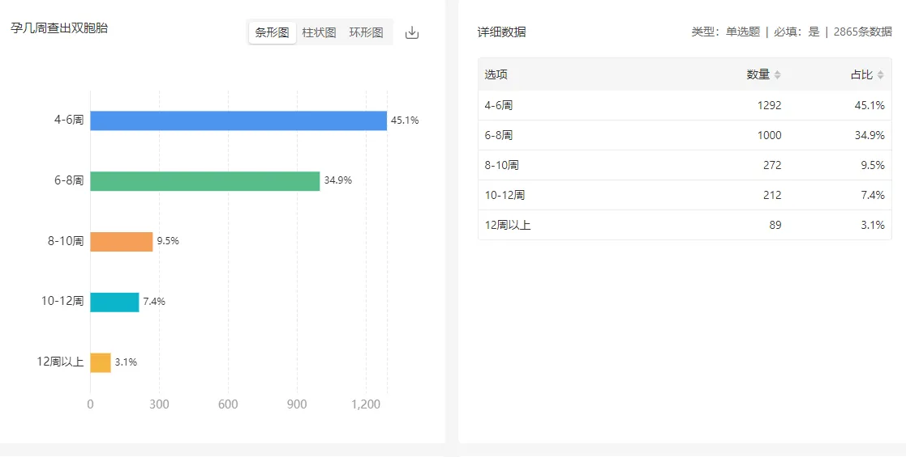
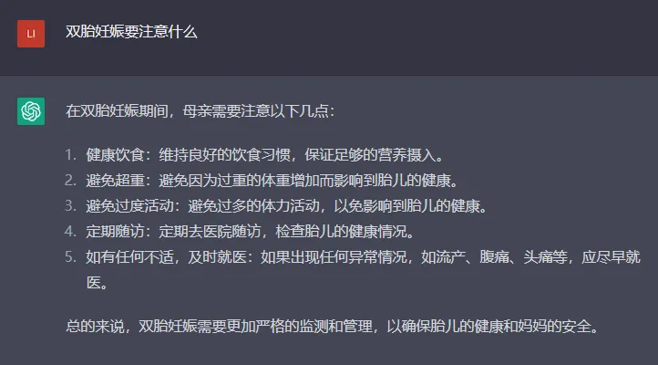
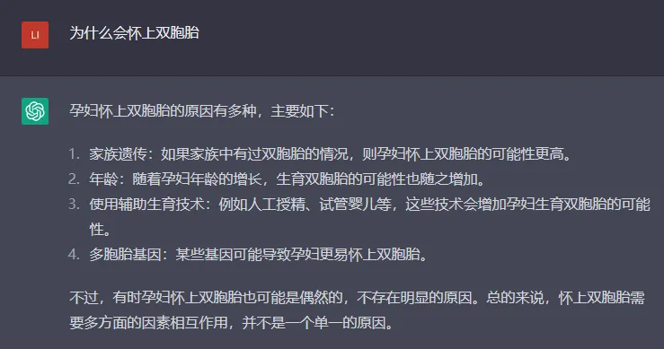
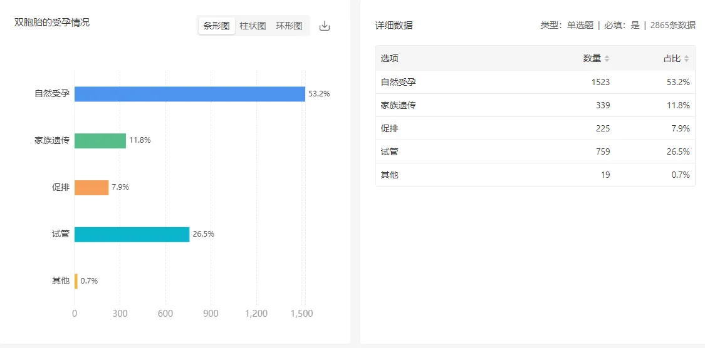
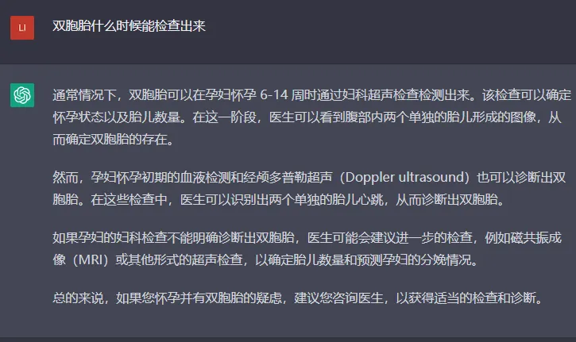
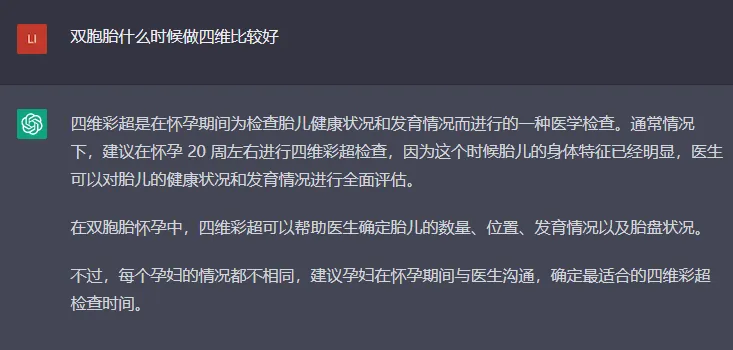
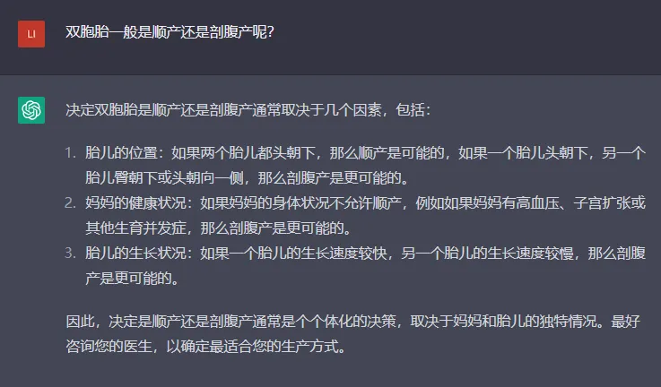
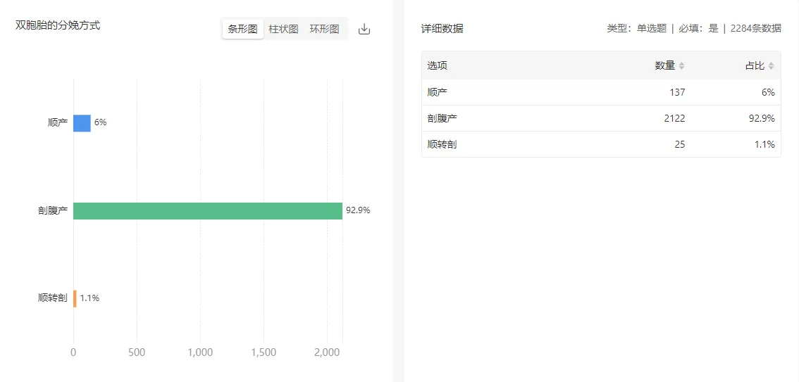

孖仔帮
公众号ID：twinsbang
关注
文|圆圈妈妈
网图|侵删
听说，chatGPT最近火爆全球了，上知天文下知地理，几乎无所不能，很多吃瓜群众受益匪浅，相见恨晚。
我也很好奇AI技术会如何养育人类的双胞胎幼崽。于是，我花了6块8搞了个账号，与chatGPT撩了下，呵呵了许久...
原来在chatGPT眼里，养对双胞胎其实就是这么一回事啊。SO EASY！
仔细一看，发现chatGPT其实回答得都很对，够专业，很科学，没毛病，除了...有点废话。
我打算公开下我和chatGPT的聊天记录，让大家一起来围观下。
今天这篇是孕育篇，接下来会有养育篇，教育篇，以及双胞胎的冷知识篇，每个问题都有圆圈妈妈的抬杠，欢迎各位小白孕妈或资深牛妈一起来battle吧。

为什么会怀上双胞胎
圆圈妈妈来battle：
当年生圆圈兄弟时是一胎，27岁，不算高龄，但也年纪不小，身强体壮无不良史，无使用任何药物，是正常的育龄妇女。
唯一有点挂钩的是遗传因素：圆圈爸的外婆有生育过一对龙凤胎，而我的婆婆就是这对龙凤胎中的姐姐。
我们孖仔帮也有做过一份不完全统计的调查，如图所示，
怀上双胞胎，什么时候能检查出来
圆圈妈妈来battle：
根据我们的不完全统计，大部分孕妈在4-6周就查出是单胎还是双胎，如图所示

孕8周做B超时，我才发现有两个胎心胎芽，属性是单绒，但是绒毛膜性待定，可能是单羊，也可能是双羊，因为孕周还小，看不清。
温馨提示：早孕期发现两个胎心胎芽但属性不明确时，别急别怕，可以再等等，实在等不及就约孕10周的B超；如果很佛系够淡定，那就等孕12周再去拆盲盒，肯定会有惊喜哦。
如果不知道什么是单绒，双绒，单羊，双羊，请看《官宣：双绒双羊，单绒双羊，单绒单羊傻傻分不清？一篇消除你所有疑问》
双胞胎什么时候显怀
圆圈妈妈来battle：
本人身高160CM，孕前体重52KG，除了有小肚腩，其他部位都算比较均匀，毫无违和感。然而就我这样的体型居然在孕3个月时就已经显怀了。
我也不知道显的是空心的肚腩还是实心的肚皮，反正当我挺着才13周大的肚子坐上公交车时，售票员就嚷着大嗓门喊：“谁给孕妇让个座啊？”
/囧！
双胞胎什么时候有胎动
圆圈妈妈来battle：
作为一胎的新手孕妈，对胎动的感知通常是后知后觉的，甚至很乌龙...
12周做NT时，我激动地告诉医生说我有胎动了，我总感觉到上腹部有东西在动，一跳一跳的，很有规律。
医生很漠然地回答：“亲，那是肠子在蠕动。”
我不置可否，等到孕20周某个午饭后，坐在躺椅上，习惯性地触摸着肚皮时，感觉有东西在肚子里面动，我手摸到哪，哪就跟着动，好像在回应我什么似的，这种动，幅度不大，好像蜻蜓点水，又好像小鱼吐泡泡...
才发现：哦，这就是传说中的胎动。
双胞胎什么时候做四维
圆圈妈妈来battle：
21周+3，约了四维彩超，医生一看这孕周就皱眉头，一脸抗拒：“怎么不早点来查？这俩都挤一块了怎么看嘛？”完了又对旁边的护士吐槽：哎呀，宁愿做10个单胎，也不想做1个双胎，太费时费事了。
我真是出双份钱，讨双份罪，双胎孕妇去产检去哪都遭人嫌！我已经麻木了！
所以，做双胎的四维，不要超过21周！免得躺枪口上。

双胎妊娠要注意什么
圆圈妈妈来battle：
chatGPT说的极是，虽然有点废话，但的确如此，无法反驳，而且确实受用。
吃好睡好，适当运动，保持好心情，定期产检。
补充一句：有事就问医生，别问度娘。
道理你懂的！
双胞胎孕妇能运动吗
圆圈妈妈来battle：
chatGPT终究是机器人，无法感同身受，我写过一篇《不吓你！怀上双胞胎不想早产，孕期运动要注意这5点》，亲身经历，即便7年后，依然能记得医生的千叮万嘱：你宫颈短，最好少动，能坐着就别站着，能躺着就别坐着。
于是，我从孕28周就开始躺，躺到面瘫...
双胞胎什么时候生产合适
圆圈妈妈来battle：
过来人的建议是：怀上双胞胎，不是熬越久就能笑到最后。越到孕后期，越要重点关注的是孕妇的身体状况和两胎儿的生长发育情况，而不是一味地熬孕周。
若有些努力和坚持注定是徒劳，那就顺其自然吧！
相信宝宝，他们千辛万苦因你而来，一定会在某个不偏不倚的时间与你相遇，你只要稍安勿躁，静心等待即可。
双胞胎一般是顺产还是剖腹产呢？
圆圈妈妈来battle：
对我这种怕痛怕死内心不够坚定的怂包来说，这根本不是选择题，而是陈述句：不要顺，我要剖，越快越好。
我们孖仔帮也有做过一份不完全统计的调查，如图所示，
未完待续...
如果你怀上双胞胎，还有很多问题和困惑，但是难以启齿或者chatGPT也解决不了，那么来我们孖仔帮的双胞胎孕育群吧。
我们都是来自天南地北的孕妈，上辈子曾经并肩作战拯救过银河系，这辈子又相遇在双胞胎孕育群，为了娘仨的平安顺利，母婴同室，一起过关斩将升级打怪。
我们的孕育经验未必科学，未必专业，未必正确，但绝对接地气，没有半句废话。
约不？
关注公众号，对话框输入“社群”，等你来撩哦！
-END-
微信公众号：孖仔帮
ID : twinsbang
专注双胞胎孕育，养育，教育经验分享
扫码关注我们
点一下你会更好看耶






